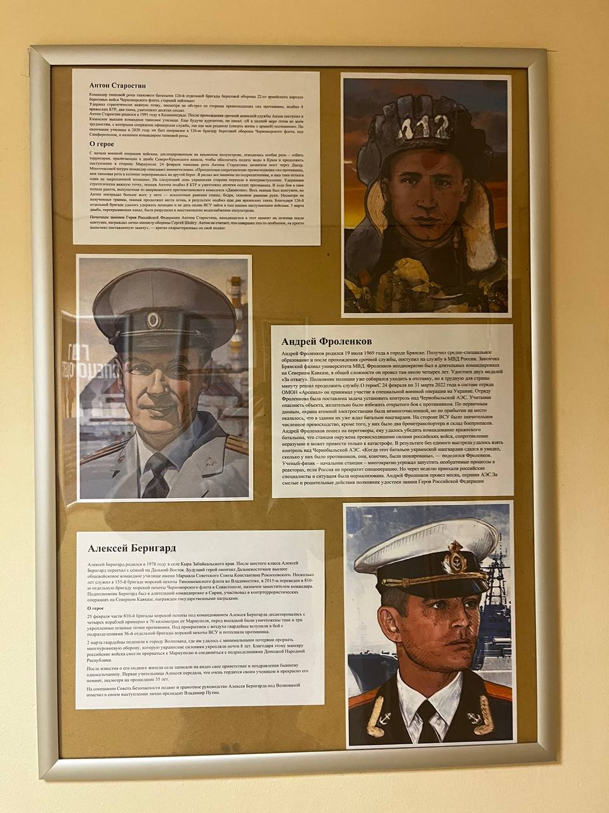

Родился в 1995 году в Калининграде. После срочной службы поступил в Казанское высшее командное танковое училище. С 2020 года служил в 126-й бригаде береговой обороны Черноморского флота под Симферополем, командир танковой роты.
24 февраля танковая рота Антона захватила мост через Днепр. Удерживая стратегически важную точку под обстрелом превосходящих сил, экипаж подбил 8 вражеских БТР и танк, уничтожил десятки солдат. Несмотря на тяжёлые ранения, экипаж продолжал вести огонь. Рота удержала позицию. Звание Героя России вручил министр обороны Сергей Шойгу. Антон считает, что не совершил ничего особенного, а лишь выполнил поставленную задачу.
Родился 19 июля 1969 года в Брянске. Получил среднее специальное образование, после срочной службы поступил в МВД России. Закончил Брянский филиал университета МВД. Неоднократно бывал в командировках на Северном Кавказе, удостоен двух медалей «За отвагу».
С 24 февраля по 31 марта 2022 года в составе отряда ОМОН «Арсенал» участвовал в операции на Украине. Отряду поставили задачу установить контроль над Чернобыльской АЭС. Охрана объекта оказалась малочисленной, но в здании уже ждал батальон нацгвардии с бронетранспортёром и боеприпасами. Фроленков пошёл на переговоры и убедил командование врага сдаться; станция окружена превосходящими силами российских войск, и это предотвратило катастрофу. Месяц охранял АЭС. За смелые и решительные действия удостоен звания Героя РФ.
Родился в 1978 году в селе Кыра Забайкальского края. После шестого класса переехал на Дальний Восток, окончил Дальневосточное высшее общевойсковое командное училище. Несколько лет служил в 155-й бригаде морской пехоты Тихоокеанского флота, в 2015 году переведён в 810-ю бригаду Черноморского флота в Севастополе. Участвовал в контртеррористических операциях на Северном Кавказе и в Сирии.
25 февраля части 810-й бригады под командованием Алексея Бернгарда десантировались с четырёх кораблей примерно в 70 км от Мариуполя, были уничтожены три укреплённые точки противника. 2 марта гвардейцы подошли к городу Волноваха и с минимальными потерями прорвали многоуровневую оборону. Благодаря этому манёвру российские войска смогли прорваться к Мариуполю. На совещании Совета Безопасности подвиг отметил лично Президент Владимир Путин.